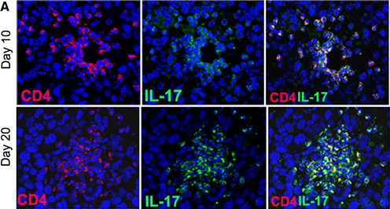
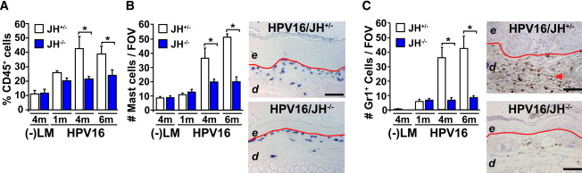

Vähi immuunsus ja immuunoteraapia
Onkobioloogia
Taavi Päll
vanemteadur, VTAK
Recap
Metastaasid
Vähi immuunsus ja immuunoteraapia
Vähi immuunoseire
Cancer immunosurveillance
- 1909. aastal oletas saksa-juudi päritolu arst Paul Ehrlich (1854-1915) et immuunsüsteem hoiab ära kartsinoomide tekke, mis vastasel juhul oleksid palju sagedasemad.
- Vähi immuunoseire hüpotees oletas, et tüümusest pärit rakud monitoorivad keha kudedes ka uusi transformeerunud rakke Burnet FM, 1970.


Vähi immuunokujundamine
Cancer immunoediting
- Alternatiivseks hüpoteesiks vähirakkude ja immuunsüsteemi interaktsioonide kirjeldamiseks on vähi immuunokujundamine.
- Vähi täielik elimineerimine immuunsüsteemi poolt on immuunokujundamine üks stsenaarium.
- Teine stsenaarium on immuunsüsteemi poolt kujundatud vähirakkude repertuaari esiletõus.
- Immuunsüsteemiga kohandunud vähirakud on kas
- vähem immuunogeneesed,
- suurenenud võimega inhibeerida vähivastast immuunvastust.
Vähi immuunoseire/-kujundamine
Vähi immuunoseire või -kujundamise toimimisele inimeses viitavad
- Kõrgem vähi intsidents immuunosupressiivset ravi saavatel organi transplantatsiooni läbinud patsientidel.
- Vähipatsientidel tekib oma vähi vastu immuunvastus.
- Vähisiseste tsütotoksiliste (CD8+) ja immuun-protektiivsete regulatoorsete (CD25+Foxp3+) T rakkude lokalisatsioon.
Kõrgem vähi intsidents immuunosupressiivse ravi puhul
- Organi transplantatsiooni läbinud patsiendid saavad tugevat immuunosupressiivset ravi.

Nahavähi populatsioon-standardiseeritud intsidents organi transplantatsiooni patsientidel (Norra ja Holland).
| Nahavähk | intsidentsi kasv |
|---|---|
| SCC | 65-korda |
| huule SCC | 20-korda |
| BCC | 10-korda |
| melanoom | 3.4-korda |
| Kapoosi sarkoom | 84-korda |
Immuunpuudulikel hiirtel tekib rohkem kasvajaid
- Metsik tüüpi või RAG2 -/- hiirtele süstiti naha alla 100 $\mu$g kartsinogeenset 3-metüülkolantreeni (methylcholanthrene, MCA) ja jälgiti vähiteket.
- 160 päeva pärast oli 9/15 RAG2-/- hiirel moodustunud MCA-indutseeritud vähid, samas oli sama moodi indutseeritud vähk tekkinud ainult 2/15 wild-type hiirel.
- RAG2-/- hiirtel puuduvad T-, B- ja NK-T rakud.

Vähid mis tekivad hiires kellel puuduvad lümfotsüüdid on immunogeensemad
- Immuunopuudulikele RAG2-/- hiirtele või metsik tüüpi hiirtele transplanteeriti naha alla 100'000 vähirakku, mis pärinesid RAG2-/- või wt hiirtest eraldatud MCA-indutseeritud tuumoritest.
- Süngeensetest wt hiirtest pärit 17 erineva vähi rakud moodustasid tuumoreid 100% (17/17) wt hiirtes.
- RAG2-/- hiirtest pärit vähirakud (20 erinevast tuumorist) moodustasid tuumoreid ainult 40% juhtudest (8/20) kui neid transplanteeriti sama geneetilise tagapõhjaga imuunkompetentsetele hiirtele.

Immuunrakud kasvaja mikrokeskonnas

- T lümfotsüüdid
- B lümfotsüüdid
- NK ja NKT rakud
- makrofaagid
- müeloidset päritolu suppressor-rakud
- dendriitrakud
- neutrofiilid
Kasvajasse infiltreeruvad erinevad T-raku populatsioonid
- lokaliseeruvad kasvaja välispiirile
- lähimasse lümfisõlme
- kasvaja stroomasse - tsütotoksilised T-rakud

T-lümfotsüüdid
- tsütotoksilised mälu T (CD8+CD45RO+),
- Th1 (partnerrakud: makrofaagid, CD8+ T),
- Th2 (partnerrakud: B, eosinofiilid, nuumrakud),
- Th17 või
- Treg rakkudeks

Soolevähis on vähi T-rakud seotud hea prognoosiga
Totaalne CD3+ T

Th1, CTL ja mälu-T
Anti-tumorigeensed - selgelt assotseeruvad hea prognoosiga
TH1
- produtseerivad IL-2 ja INF\(\gamma\),
- toetavad kasvajale tsütotoksilisi CD8+ mälu T-rakke (CD8+CD45RO+).
CTL
- CD8+ tsütotoksilised T-rakud
- põhjustavad apoptoosi tsütotoksiliste graanulite (perforiin, granzyme) eritamise teel.

Th2 & Th17
Enamasti kasvaja arengut võimendav effekt
TH2
- produtseerivad IL-4, IL-5 ja IL-13 ja
- toetavad B-rakkude aktivatsiooni
- sekreteerivad immunosuppressiivset IL-10
TH17
- TH17 polarisatsiooni indutseerivad TGF-\(\beta\) ja IL-6
- IL-17A, IL17F, IL-21 ja IL-22
- bakteriaalse põletiku vastus
Pahaloomulistes kasvajates on rohkem Th17 rakke
TH17-infiltreerumine on pahaloomulistes kasvajates tavaline:
- näo-lõualuu kasvajad, Kesselring et al. (2010)
- rinnakasvajad, Yang et al. (2011)
- neerukasvajad, Attig et al. (2009)
- glioomid, Wainwright et al. (2010)
- medulloblastoomid, Cantini et al. (2011)

Th17 pro-tumorigeensed mehhanismid

- Angiogenees: indutseerivad VEGF-i ekspressiooni.
- Indutseerivad neutrofiilide invasiooni
- ECM-i lagundamine
- immunosuppressioon.
Immuunosuppressiivsed Treg rakud
Kõige sagedamini kirjeldatud pro-tumorigensete omadustega CD4+ rakud
- iseloomulik FOXP3 ja CD25 ekspressioon
- immuunosupressiivne funktsioon on vahendatud üle
- TGF-\(\beta\) ja IL-10 sekretsiooni ja
- CTLA4-vahendatud kontaktinhibitsiooni.

B rakud
Humoraalne immuunsus reguleerib lamerakulise nahakartsinoomi arengut
Hiire K14-HPV16JH-/- nahakartsinoomi mudel kus on B rakkude teke "välja lülitatud".
- FcR\(\gamma\) aktivatsioon lükkab tagant põletiku põhjustatud kartsinogeneesi.
- B rakkude poolt sekreteeritavate autoantikehade akumulatsioon stroomas aktiveerib üle FcR\(\gamma\) retseptori nuumrakud Andreu et al. (2010)
- FcR\(\gamma\) reguleerib ka makrofaagide angiogeneetilist ja protumorigeenset toimet.

NK rakud
- NK rakkude märklauaks on sellised rakud mille pinnalt puuduvad MHC-I molekulid ja rakud mis ekspresseerivad oma pinnal NKG2D ligandi MICA vüi RAE.
Kasvajas on NK rakud anergilised
- anergia ilmselt vahendatud läbi kasvaja TGF-\(\beta\)
- pole aktiveeritavad isegi IL-2 poolt,
- ei sekreteeri INF\(\gamma\).

NKG2D ja ligandid

Kasvaja makrofaagid
Makrofaagid võivad diferentseeruda kahes suunas:
tüüp 1 (M1)
- vastusena bakteriaalse infektsioonile (LPS) ja
- Th1 sekreteeritavale INF-\(\gamma\) muutuvad aktiivselt fagotsüteerivateks rakkudeks, suunatud ka vähirakkude vastu;
tüüp 2 (M2),
- vastusena hüpoksiale ja vähi poolt sekreteeritud tsütokiinidele IL-4, IL-10, IL-13 või
- TGF-β ja prostaglandiin E2 diferentseeruvad makrofaagid immuunosupressiivseteks ja
- sarnaselt Th2 rakkudele hakkavad Th1-supresseerivaid tsütokiine tootma (IL-10 ja IL1\(\beta\)).
Kasvaja immuunkontekst